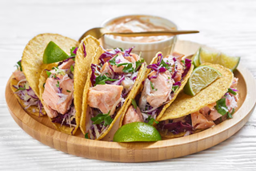

Recetas
Recetas
 Pollo
Pollo
 Pescado
Pescado
 Atun
Atun
 Veganas
Veganas
 Vegetarianas
Vegetarianas
 Quinoa
Quinoa

Tacos de pescado con salsa de yogur y col
Tacos ligeros y sabrosos de pescado con una deliciosa salsa de yogur y una mezcla crujiente de col. Perfectos para una comida ligera y completa
Dificultad
Medio

Personas
4

TOTAL
25MIN
Ingredientes:
- ● 4 filetes de pescado (tilapia, merluza o pescado blanco)
- ● 8 tortillas de maíz
- ● 1/2 col morada, rallada
- ● 1 zanahoria, rallada
- ● 1/2 taza de yogur griego natural
- ● Jugo de 1 limón
- ● 1 cucharada de mostaza Dijon (opcional)
- ● Sal y pimienta al gusto
- ● Cilantro fresco al gusto
Información nutricional (aproximada por porción):
- ● Calorías: 350 kcal
- ● Proteínas: 30 g
- ● Grasas: 12 g
- ● Carbohidratos: 35 g
- ● Fibra: 7 g
A cocinar:
- 1. Cocina los filetes de pescado a la plancha o en una sartén con un poco de aceite de oliva, 4-5 minutos por cada lado, hasta que estén dorados y cocidos.
- 2. En un tazón pequeño, mezcla el yogur con el jugo de limón, mostaza, sal y pimienta.
- 3. En otro tazón, combina la col rallada, zanahoria y un poco de cilantro picado. Agrega una cucharadita de jugo de limón, sal y pimienta.
- 4. Calienta las tortillas en un sartén durante 30 segundos por lado.
- 5. Para armar los tacos, coloca el pescado desmenuzado en cada tortilla, añade la ensalada de col y una cucharada de salsa de yogur por encima.
- 6. Sirve inmediatamente.